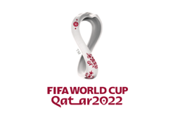

FIFA World cup 2026 News
The biggest scoreline in the history of the FIFA World Cup qualifiers - and indeed in the history
of international football - was recorded on 11 April 2022, when Australia beat American Samoa 31-0.
This legendary match also brought global renown for Archie Thompson, whose 13-goal haul set a new
world record, which stands to this day, for an individual player in a single international match.